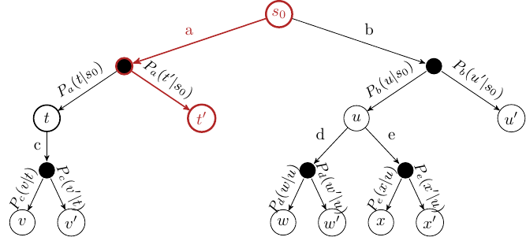
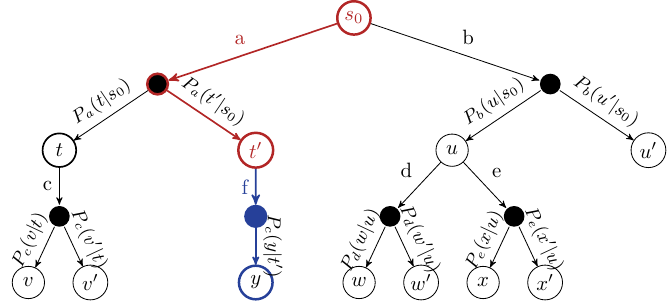
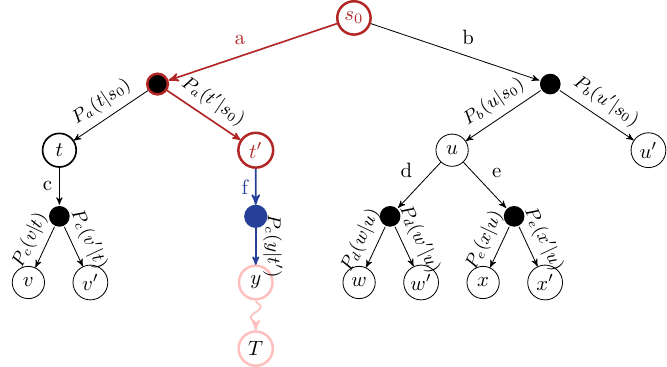
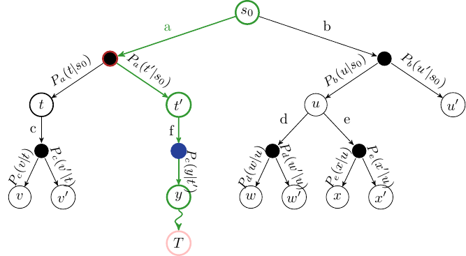
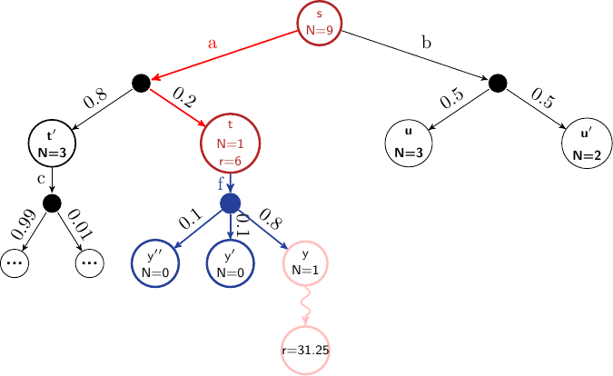
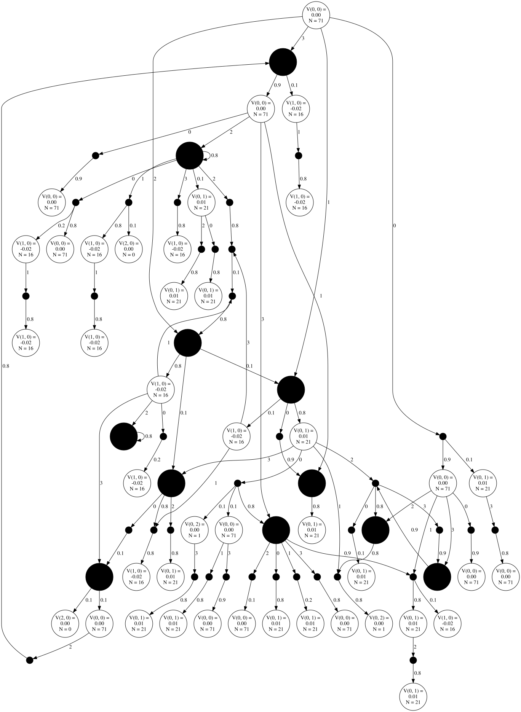
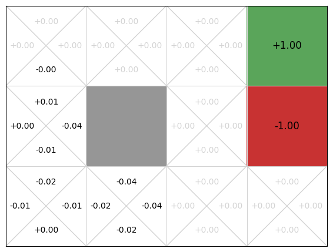
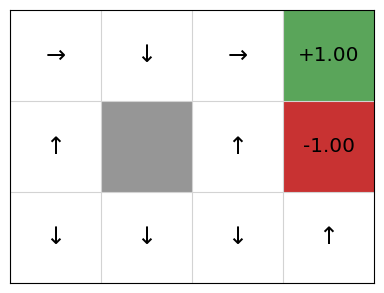
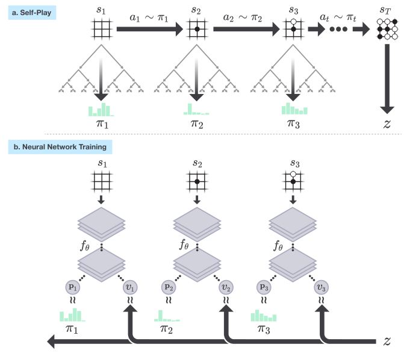

Monte-Carlo Tree Search (MCTS)#
Learning outcomes
The learning outcomes of this chapter are:
Explain the difference between offline and online planning for MDPs.
Apply MCTS solve small-scale MDP problems manually and program MCTS algorithms to solve medium-scale MDP problems automatically.
Construct a policy from Q-functions resulting from MCTS algorithms.
Integrate multi-armed bandit algorithms (including UCB) to MCTS algorithms.
Compare and contrast MCTS to value iteration.
Discuss the strengths and weaknesses of the MCTS family of algorithms.
Offline Planning & Online Planning for MDPs#
We saw value iteration in the previous section. This is an offline planning method because we solve the problem offline for all possible states, and then use the solution (a policy) online to act.
Yet the state space \(S\) is usually far too big to determine \(V(s)\) or \(\pi\) exactly. Even games like Go, which are famously difficult for reinforcement learning, requiring computational power available to only a handful of organisations, are small compared to many real-world problems.
There are methods to approximate the MDP by reducing the dimensionality of \(S\), but we will not discuss these until later.
In online planning, planning is undertaken immediately before executing an action. Once an action (or perhaps a sequence of actions) is executed, we start planning again from the new state. As such, planning and execution are interleaved such that:
For each state \(s\) visited, the set of all available actions \(A(s)\) partially evaluated
The quality of each action \(a\) is approximated by averaging the expected reward of trajectories over \(S\) obtained by repeated simulations, giving as an approximation for \(Q(s,a)\).
The chosen action is \(\text{argmax}_{a'} Q(s,a)\)
In online planning, we need access to a simulator that approximates the transitions function \(P_a(s' |s)\) and reward function \(r\) of our MDP. A model can be used, however, often it is easier to write a simulation that can choose outcomes with probability \(P_a(s' | s)\) than it is to analytically calculate the probabilities for any state. For example, consider games like StarCraft. Calculating the probability of ending in a state for a given action is more difficult than simulating possible states.
The simulator allows us to run repeated simulations of possible futures to gain an idea of what moves are likely to be good moves compared to others.
The question is: how to we do the repeated simulations? Monte Carlo methods are by far the most widely-used approach.
Overview#
Monte Carlo Tree Search (MTCS) is a name for a set of algorithms all based around the same idea. Here, we will focus on using an algorithm for solving single-agent MDPs in a model-based manner. Later, we look at solving single-agent MDPs in a model-free manner and multi-agent MDPs using MCTS.
Foundation: MDPs as ExpectiMax Trees#
To get the idea of MCTS, we note that MDPs can be represented as trees (or graphs), called ExpectiMax trees:

Fig. 6 Abstract example of an ExpectiMax Tree#
The letters \(a\)-\(e\) represent actions, and letters \(s\)-\(x\) represent states. White nodes are state nodes, and the small black nodes represent the probabilistic uncertainty: the ‘environment’ choosing which outcome from an action happens, based on the transition function.
Monte Carlo Tree Search – Overview#
The algorithm is online, which means the action selection is interleaved with action execution. Thus, MCTS is invoked every time an agent visits a new state.
Fundamental features:
The Q-value \(Q(s,a)\) for each is approximated using random simulation.
For a single-agent problem, an ExpectiMax search tree is built incrementally
The search terminates when some pre-defined computational budget is used up, such as a time limit or a number of expanded nodes. Therefore, it is an anytime algorithm, as it can be terminated at any time and still give an answer.
The best performing action is returned.
This is complete if there are no dead–ends.
This is optimal if an entire search can be performed (which is unusual – if the problem is that small we should just use a dynamic programming technique such as value iteration).
The Framework: Monte Carlo Tree Search (MCTS)#
The basic framework is to build up a tree using simulation. The states that have been evaluated are stored in a search tree. The set of evaluated states is incrementally built be iterating over the following four steps:
Select: Select a single node in the tree that is not fully expanded. By this, we mean at least one of its children is not yet explored.
Expand: Expand this node by applying one available action (as defined by the MDP) from the node.
Simulate: From one of the outcomes of the expanded, perform a complete random simulation of the MDP to a terminating state. This therefore assumes that the simulation is finite, but versions of MCTS exist in which we just execute for some time and then estimate the outcome.
Backpropagate: Finally, the value of the node is backpropagated to the root node, updating the value of each ancestor node on the way using expected value.
Selection#
Start at the root node, and successively select a child node until we reach a node that is not fully expanded.

Fig. 7 MCTS Selection step. The red arcs and nodes are those that have been selected#
Expansion#
Unless the node we end up at is a terminating state, expand the children of the selected node by choosing an action and creating new nodes using the action outcomes.

Fig. 8 MCTS Expansion step. The blue arcs and nodes are those that have been selected.#
Simulation#
Choose one of the new nodes and perform a random simulation of the MDP to the terminating state:

Fig. 9 MCTS Simulation step. The pink nodes and arcs represent the simulation.#
Backpropagation#
Given the reward \(r\) at the terminating state, backpropagate the reward to calculate the value \(V(s)\) at each state along the path.

Fig. 10 MCTS Backpropagation step. The green arcs and nodes represent the states and actions whose Q-values will be updated.#
Algorithm#
In a basic MCTS algorithm we incrementally build of the search tree. Each node in the tree stores:
a set of children nodes;
pointers to its parent node and parent action; and
the number of times it has been visited.
We use this tree to explore different Monte-Carlo simulations to learn a Q-function \(Q\).
Algorithm 6 (Monte-Carlo Tree Search)
\( \begin{array}{l} \alginput:\ \text{MDP}\ M = \langle S, s_0, A, P_a(s' \mid s), r(s,a,s')\rangle, \text{base Q-function}\ Q, \text{time limit}\ T \\ \algoutput:\ \text{updated Q-function}\ Q \\[2mm] \algwhile\ current\_time < T\ \algdo \\ \quad\quad selected\_node \leftarrow \text{Select}(s_0) \\ \quad\quad child \leftarrow \text{Expand}(selected\_node)\ \text{-- expand and choose a child to simulate} \\ \quad\quad G \leftarrow \text{Simulate}(child)\ \text{ -- simulate from}\ child \\ \quad\quad \text{Backpropagate}(selected\_node, child, Q, G) \\ \algreturn \ Q \end{array} \)
Given this, there are four main parts to the algorithm above:
Selection: The first loop progressively selects a branch in the tree using a multi-armed bandit algorithm using \(Q(s,a)\). The outcome that occurs from an action is chosen according to \(P(s' \mid s)\) defined in the MDP.
Algorithm 7 (Function – \(\text{Select}(s : S)\))
\( \begin{array}{l} \alginput:\ \text{state}\ s \\ \algoutput:\ \text{unexpanded state}\ s \\[2mm] \algwhile\ s\ \text{is fully expanded}\ \algdo \\ \quad\quad \text{Select action}\ a\ \text{to apply in}\ s\ \text{using a multi-armed bandit algorithm} \\ \quad\quad \text{Choose one outcome}\ s'\ \text{according to}\ P_a(s' \mid s) \\ \quad\quad s \leftarrow s' \\ \algreturn\ s \end{array} \)
Expansion: Select an action \(a\) to apply in state \(s\), either randomly or using an heuristic. Get an outcome state \(s'\) from applying action \(a\) in state \(s\) according to the probability distribution \(P(s' \mid s)\). Expand a new environment node and a new state node for that outcome.
Algorithm 8 (Function – \(\text{Expand}(s : S)\))
\( \begin{array}{l} \alginput:\ \text{state}\ s \\ \algoutput:\ \text{expanded state}\ s' \\[2mm] \algif\ s\ \text{is fully expanded}\ \algthen \\ \quad\quad \text{Randomly select action}\ a\ \text{to apply in}\ s\ \\ \quad\quad \text{Expand one outcome}\ s'\ \text{according to}\ P_a(s' \mid s)\ \textrm{and observe reward}\ r \\ \algreturn\ s' \end{array} \)
Simulation: Perform a randomised simulation of the MDP until we reach a terminating state. That is, at each choice point, randomly select an possible action from the MDP, and use transition probabilities \(P_a(s' \mid s)\) to choose an outcome for each action. Heuristics can be used to improve the random simulation by guiding it towards more promising states. \(G\) is the cumulative discounted reward received from the simulation starting at \(s'\) until the simulation terminates.
To avoid memory explosion, we discard all nodes generated from the simulation. In any non-trivial search, we are unlikely to ever need them again.
Backpropagation: The reward from the simulation is backpropagated from the selected node to its ancestors recursively. We must not forget the discount factor! For each state \(s\) and action \(a\) selected in the Select step, update the cumulative reward of that state.
Algorithm 9 (Function – \(\text{Backpropagation}(s : S; a : A; Q : S\times A \rightarrow \mathbb{R}; G : \mathbb{R})\))
\( \begin{array}{l} \alginput:\ \text{state-action pair}\ (s, a), \text{Q-function}\ Q,\ \text{rewards}\ G\\ \algoutput:\ \text{none} \\[2mm] \algdo \\ \quad\quad N(s,a) \leftarrow N(s,a) + 1 \\ \quad\quad G \leftarrow r + \gamma G \\ \quad\quad Q(s,a) \leftarrow Q(s,a) + \tfrac{1}{N(s,a)}[G - Q(s,a)] \\ \quad\quad s \leftarrow\ \text{parent of}\ s \\ \quad\quad a \leftarrow\ \text{parent action of}\ s \\ \algwhile\ s \neq s_0 \end{array} \)
Because action outcomes are selected according to \(P_a(s' \mid s)\), this will converge to the average expected reward. This is why the tree is called an ExpectiMax tree: we maximise the expected return.
But: what if we do not know \(P_a(s' \mid s)\)?
Provided that we can simulate the outcomes; e.g. using a code-based simulator, then this does not matter. Over many simulations, the Select (and Expand/Execute steps) will sample \(P_a(s' \mid s)\) sufficiently close that \(Q(s,a)\) will converge to the average expected reward. Note that this is not a model-free approach: we still need a model in the form of a simulator, but we do not need to have explicit transition and reward functions.
Example: Backpropagation
Consider the following ExpectiMax tree that has been expanded several times. Assume \(\gamma=0.8\), \(r=X\) represents reward \(X\) received at a state, and the length of the simulation is 3. After the simulation step, but before backpropagation, our tree would look like this:

In the current iteration, the red actions are selected, and the blue node is expanded to its three children nodes. A simulation is run from \(y\), which terminates after 3 steps. A reward of 31.25 is received in the terminal state. This would mean that the discounted reward returned at node \(y\) would be \(\gamma^{2} \times 31.25\), which is 20.
Before backpropagation, we have the following:
We leave out the remainder of the Q-function as it is not relevant to the example.
The backpropagation step is then calculated for the nodes \(y\), \(t\), and \(s\) as follows:
Action selection#
Once we have run out of computational time, we select the action that maximises are expected return, which is simply the one with the highest Q-value from our simulations:
We execute that action and wait to see which outcome occurs for the action.
Once we see the outcome state, which we will call \(s'\), we start the process all over again, except with \(s_0 \leftarrow s'\).
However, importantly, we can keep the sub-tree from state \(s'\), as we already have done simulations from that state. We discard the rest of the tree (all child of \(s_0\) other than the chosen action) and incrementally build from \(s'\).
Upper Confidence Trees (UCT)#
When we select nodes, we select using some multi-armed bandit algorithm. We can use any multi-armed bandit algorithm, but in practice, using a slight variation of the UCB1 algorithm has proved to be successful in MCTS.
The Upper Confidence Trees (UCT) algorithm is the combination of MCTS with the UCB1 strategy for selecting the next node to follow:
The UCT selection strategy is similar to the UCB1 strategy:
\(N(s)\) is the number of times a state node has been visited, and \(N(s,a)\) is the number of times \(a\) has been selected from this node. \(C_p >0\) is the exploration constant, which determines can be increased to encourage more exploration, and decreased to encourage less exploration. Ties are broken randomly.
Note
If \(Q(s,a) \in [0,1]\) and \(C_p=\frac{1}{\sqrt{2}}\) then in two-player zero-sum, UCT converges to the well-known Minimax algorithm.
Implementation#
Below is an implementation of MCTS in Python. This is a simulation-based implementation as it simulates outcomes and uses a moving average to calculate a value. However, the implementation keeps track of probabilities for the purpose of visualisation.
First, we create a class Node, which forms the basis for the tree:
import math
import random
import time
from collections import defaultdict
class Node:
# Record a unique node id to distinguish duplicated states
next_node_id = 0
# Records the number of times states have been visited
visits = defaultdict(lambda: 0)
def __init__(self, mdp, parent, state, qfunction, bandit, reward=0.0, action=None):
self.mdp = mdp
self.parent = parent
self.state = state
self.id = Node.next_node_id
Node.next_node_id += 1
# The Q function used to store state-action values
self.qfunction = qfunction
# A multi-armed bandit for this node
self.bandit = bandit
# The immediate reward received for reaching this state, used for backpropagation
self.reward = reward
# The action that generated this node
self.action = action
""" Select a node that is not fully expanded """
def select(self):
abstract
""" Expand a node if it is not a terminal node """
def expand(self):
abstract
""" Backpropogate the reward back to the parent node """
def back_propagate(self, reward, child):
abstract
""" Return the value of this node """
def get_value(self):
max_q_value = self.qfunction.get_max_q(
self.state, self.mdp.get_actions(self.state)
)
return max_q_value
""" Get the number of visits to this state """
def get_visits(self):
return Node.visits[self.state]
class MCTS:
def __init__(self, mdp, qfunction, bandit):
self.mdp = mdp
self.qfunction = qfunction
self.bandit = bandit
"""
Execute the MCTS algorithm from the initial state given, with timeout in seconds
"""
def mcts(self, timeout=1, root_node=None):
if root_node is None:
root_node = self.create_root_node()
start_time = time.time()
current_time = time.time()
while current_time < start_time + timeout:
# Find a state node to expand
selected_node = root_node.select()
if not self.mdp.is_terminal(selected_node):
child = selected_node.expand()
reward = self.simulate(child)
selected_node.back_propagate(reward, child)
current_time = time.time()
return root_node
""" Create a root node representing an initial state """
def create_root_node(self):
abstract
""" Choose a random action. Heustics can be used here to improve simulations. """
def choose(self, state):
return random.choice(self.mdp.get_actions(state))
""" Simulate until a terminal state """
def simulate(self, node):
state = node.state
cumulative_reward = 0.0
depth = 0
while not self.mdp.is_terminal(state):
# Choose an action to execute
action = self.choose(state)
# Execute the action
(next_state, reward, done) = self.mdp.execute(state, action)
# Discount the reward
cumulative_reward += pow(self.mdp.get_discount_factor(), depth) * reward
depth += 1
state = next_state
return cumulative_reward
In our single-agent MCTS problem, we have two nodes in an ExpectiMax tree: nodes representing states, and nodes representing `choice points’ for the environment (that is, the filled nodes that correspond to an action outcome).
In our implementation, we represent this with just one class called Node. When we expand a new action, we choose a child node of that action:
import random
from mastering_rl.learners.mcts import MCTS, Node
class SingleAgentNode(Node):
def __init__(
self,
mdp,
parent,
state,
qfunction,
bandit,
reward=0.0,
action=None,
):
super().__init__(mdp, parent, state, qfunction, bandit, reward, action)
# A dictionary from actions to a set of node-probability pairs
self.children = {}
""" Return true if and only if all child actions have been expanded """
def is_fully_expanded(self):
valid_actions = self.mdp.get_actions(self.state)
if len(valid_actions) == len(self.children):
return True
else:
return False
""" Select a node that is not fully expanded """
def select(self):
if not self.is_fully_expanded() or self.mdp.is_terminal(self.state):
return self
else:
actions = list(self.children.keys())
action = self.bandit.select(self.state, actions, self.qfunction)
return self.get_outcome_child(action).select()
""" Expand a node if it is not a terminal node """
def expand(self):
if not self.mdp.is_terminal(self.state):
# Randomly select an unexpanded action to expand
actions = self.mdp.get_actions(self.state) - self.children.keys()
action = random.choice(list(actions))
self.children[action] = []
return self.get_outcome_child(action)
return self
""" Backpropogate the reward back to the parent node """
def back_propagate(self, reward, child):
action = child.action
Node.visits[self.state] = Node.visits[self.state] + 1
Node.visits[(self.state, action)] = Node.visits[(self.state, action)] + 1
q_value = self.qfunction.get_q_value(self.state, action)
delta = (1 / (Node.visits[(self.state, action)])) * (
reward - self.qfunction.get_q_value(self.state, action)
)
self.qfunction.update(self.state, action, delta)
if self.parent != None:
self.parent.back_propagate(self.reward + reward, self)
""" Simulate the outcome of an action, and return the child node """
def get_outcome_child(self, action):
# Choose one outcome based on transition probabilities
(next_state, reward, done) = self.mdp.execute(self.state, action)
# Find the corresponding state and return if this already exists
for child, _ in self.children[action]:
if next_state == child.state:
return child
# This outcome has not occured from this state-action pair previously
new_child = SingleAgentNode(
self.mdp, self, next_state, self.qfunction, self.bandit, reward, action
)
# Find the probability of this outcome (only possible for model-based)
probability = 0.0
for outcome, probability in self.mdp.get_transitions(self.state, action):
if outcome == next_state:
self.children[action] += [(new_child, probability)]
return new_child
class SingleAgentMCTS(MCTS):
def create_root_node(self):
return SingleAgentNode(
self.mdp, None, self.mdp.get_initial_state(), self.qfunction, self.bandit
)
The advantage of using this single node is that our MCTS class forms the basis of a multi-agent MCTS algorithm, where we design a new class that implements the selection, expansion and backpropagation steps, while the base MCTS algorithm remains the same.
We can visualise one of our MCTS trees to demonstrate another issue with this vanilla MCTS algorithm. Here, we execute for just 0.03 seconds (to avoid a tree that is too large to visualise), we show the tree, and we only visualise up to the 6th level (including both state and environment nodes). At each node, \(V(s)\) is the value of that node (the child with the highest Q-value). Right-click and open the image in a new tab to see a larger version:
from mastering_rl.learners.single_agent_mcts import SingleAgentMCTS
from mastering_rl.markov_decision_processes.gridworld import GridWorld
from mastering_rl.multi_armed_bandit.ucb import UpperConfidenceBounds
from mastering_rl.policies.q_policy import QPolicy
from mastering_rl.qfunctions.qtable import QTable
from mastering_rl.utils.graph_visualisation import GraphVisualisation
gridworld = GridWorld()
qfunction = QTable()
root_node = SingleAgentMCTS(gridworld, qfunction, UpperConfidenceBounds()).mcts(timeout=0.03)
gv = GraphVisualisation(max_level=6)
graph = gv.single_agent_mcts_to_graph(root_node, filename="mcts")
graph

The MCTS tree here demonstrates a weakness of this implementation: the same state expanded multiple times along a path, and will continue to be expanded. We can work around this by not expanding states that have already been visited, returning \(V(s)\) as the reward for any expanded state, and not expanding it any more. For systems where repeated states are not an issue; e.g. some games, this problem does not arise.
If we visualise the Q-function, we can see that only the actions that occur early in episodes have any informed Q-values:
gridworld.visualise_q_function(qfunction)

Therefore, the extracted policy is not yet very good:
policy = QPolicy(qfunction)
gridworld.visualise_policy(policy)

After 0.03 seconds, the rewards are improving but are still quite noisy. This makes sense. First, early random simulations are (a bit) more likely to terminate in the -1 state because it is four actions away from the initial state, while the +1 goal state is five actions away. Second, because the an agent can go back to previous states, the random simulations are often long sequences of actions and so they received a small discounted reward. Finally, there is actually little difference from the start node between going left, up, and down: moving down or left from the initial state transitions back to the initial state with probability 0.9, so the difference between the three actions on average is just the discount factor.
Next, we execute this MCTS algorithm on the GridWorld problem for 1 second and visualise the corresponding Q-function every 0.01 second:

The final values after 1 second are much closer to what we expect.
Function approximation#
As with standard Q-learning, we can use Q-function approximation to help generalise learning in MCTS.
In particular, we can use an off-line method such as Q-learning or SARSA with Q-function approximation to learn a general Q-function. Often this will work quite well, however, the issue with Q-function approximation is sometimes the approximation does not work well for certain states during execution.
To mitigate this, we can then use MCTS (online planning) to search from the actual state, but starting with the pre-trained Q-function. This has two benefits:
The MCTS supplements the pre-trained Q-function by running simulations from the actual initial state \(s_0\), which may reflect the real rewards more accurately than the pre-trained Q-function given that it is an approximation.
The pre-trained Q-function improves the MCTS search by guiding the selection step. In effect, the early simulations are not as random because there is some signal to use. This helps to mitigate the cold start problem, which is when we have no information to exploit at the start of learning.
Later in this chapter, we see an example of this with AlphaZero.
Why does it work so well (sometimes)?#
It addresses exploitation vs. exploration comprehensively.
UCT is systematic:
Policy evaluation is exhaustive up to a certain depth.
Exploration aims to minimise regret.
Below is a video of MCTS playing the game Mario brothers. The lines in front of Mario illustrate the exploration:
Here is UCT doing poorly playing a game of Freeway:
It fails here because the character does not receive a reward until it reaches the other side of the road, so UCT has no feedback to go on. This is the same problem that we see in GridWorld: random simulations spend a lot of time exploring for no reward. In this case, the length of a path to reach a reward is so long that it does not even get to the other side of the road. Heuristics are needed here.
Value iteration vs. MCTS#
Often the set of states reachable from the initial state \(s_0\) using an optimal policy is much smaller than the set of total states. In this regards, value iteration is exhaustive: it calculates behaviour from states that will never be encountered if we know the initial state of the problem.
MCTS (and other search methods) methods thus can be used by just taking samples starting at \(s_0\). However, the result is not as general as using value/policy iteration: the resulting solution will work only from the known initial state \(s_0\) or any state reachable from \(s_0\) using actions defined in the model. Whereas value iteration works from any state.
Value iteration |
MCTS |
|
|---|---|---|
Cost |
Higher cost (exhaustive) |
Lower cost (does not solve for entire state space) |
Coverage/ Robustness |
Higher (works from any state) |
Lower (works only from initial state or state reachable from initial state) |
This is important: value iteration is then more expensive for many problems, however, for an agent operating in its environment, we only solve exhaustively once, and we can use the resulting policy many times no matter state we are in latter.
For MCTS, we need to solve online each time we encounter a state we have not considered before. As we see, even for a simple problem like GridWorld, doing many rollouts in a one second interval does not lead to a good policy; but with some careful crafting of the algorithm (avoid duplicate states, use a heuristic for rollouts), this can be improved.
Combining MCTS and TD learning: Alpha Zero#
Alpha Zero (or more accurately its predecessor AlphaGo) made headlines when it beat Go world champion Lee Sodol in 2016. It uses a combination of MCTS and (deep) reinforcement learning to learn a policy.
A simple overview:
AlphaZero uses a deep neural network to estimate the Q-function. More accurately, it gives an estimate of the probability of selecting action \(a\) in state \(s\) (\(P(a|s)\)), and the value of the state (\(V(s)\)), which represents the probability of the player winning from \(s\).
It is trained via self-play*. Self-play is when the same policy is used to generate the moves of both the learning agent and any of its opponents. In AlphaZero, this means that initially, both players make random moves, but both also learn the same policy and use it to select subsequent moves.
At each move, AlphaZero:
Executes an MCTS search using UCB-like selection: \(Q(s,a) + P(s,a)/(1+N(s,a))\), which returns the probabilities of playing each move.
The neural network is used to guide the MCTS by influencing \(Q(s,a)\).
The final result of a simulated game is used as the reward for each simulation.
After a set number of MCTS simulations, the best move is chosen for self-play.
Repeat steps 1-4 for each move until the self-play game ends.
Then, feedback the result of the self-play game to update the \(Q\) function for each move.
AlphaZero is best summarised using the following figure from the Alpha Zero Nature paper (2017):

Fig. 11 The AlphaZero framework. Mastering the Game of Go without Human Knowledge. D. Silver, et al. Nature volume 550, pages 354–359 (2017)#
Takeaways#
Takeaways
Monte Carlo Tree Search (MCTS) is an anytime search algorithm, especially good for stochastic domains, such as MDPs.
It can be used for model-based or simulation-based problems.
Smart selection strategies are crucial for good performance.
UCT is the combination of MCTS and UCB1, and is a successful algorithm on many problems.
Further Reading#
Chapters 2 and 5 of Reinforcement Learning: An Introduction, second edition.
Mastering the Game of Go without Human Knowledge. D. Silver, et al. Nature volume 550, pages 354–359 (2017)
A Survey of Monte Carlo Tree Search Methods. Cameron Browne, Edward Powley, Daniel Whitehouse, Simon Lucas, Peter I. Cowling, Philipp Rohlfshagen, Stephen Tavener, Diego Perez, Spyridon Samothrakis and Simon Colton. IEEE Transactions on Computational Intelligence and AI in Games, (4)1: 1-49, 2012
Monte-Carlo Tree Search: A New Framework for Game AI. Guillaume Chaslot, Sander Bakkes, Istvan Szita, and Pieter Spronck. In AIIDE, 1-2, 2008.